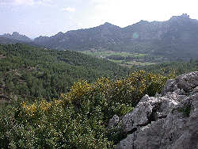
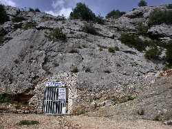

Zeytintaşi Mağarası
Olive Cave
Useful Information
|  |
| Image: view down the valley from near the cave entrance. |
| Location: |
In Akbaş, a part of Serik.
North of Side, 54km east of Antalya, 20km north of Serik.
From the main road Antalya-Alanya, the cave is signposted from the center of Serik. From here the road goes straight north for 19km, through the city, the fields, and the small village Deniztepesi. In the village the road becomes very bad, just follow it straight ahead. The turn off to the cave is signposted, follow a rather good gravel road 400m to the cave. The cave is also signposted from nearby Aspendios, the famous Roman theatre. Unfortunately the signs are missing at Deniztepesi, try to keep right and to the north. (37°02"52,0'N, 31°06"42,6'E) |
| Open: | Summer daily 9-18. Tours on demand. [2006] |
| Fee: | Adults YTL 4, Children (6-18) YTL 1.50, Children (0-5) free. [2006] |
| Classification: |
 Karst cave Karst cave
|
| Light: | electric. |
| Dimension: | A=220m asl, VR=14m. |
| Guided tours: | D=10min. |
| Photography: | |
| Accessibility: | |
| Bibliography: | L=100m. |
| Address: | Akbaş Köyü Zeytintaşi Mağarası, Serik, Antaly, Tel: +90-242-7181155. |
| As far as we know this information was accurate when it was published (see years in brackets), but may have changed since then. Please check rates and details directly with the companies in question if you need more recent info. |
|
History
| 1997 | discovered during quarry works. |
| 2002 | opened to the public. |
Description
|  |
| Image: the cave entrance at the foot of Zeytintaşi hill. |
Zeytintaşi Mağarası has two levels, the upper level is 136m long and the lower level is 98m long. Only a part of the upper level is developed. It is entered through a short, 10m long, tunnel at the foot of the limestone cliff. The path ends in a small chamber with a 14m deep shaft leading to the lower level. The owner plans to develop this level too, but he has some technical difficulties. As far as we understood, the cave is privatly owned and the owner does all the work himself.
 |
| Image: karren around Zeytintaşi hill. |
Zeytintaşi Cave is a very small cave with very nice speleothems. There are pure white stalactites with almost no damages. In the rear section there are virtually thousands of soda straws, all over the ceiling. Being generally about 30 to 40cm long, there are some longer ones up to 70cm long.
An most astonishing sight was also a small stalactite, which was broken. The tip of the thin stalactite was missing, and so the central soda straw was accessible again. Water from the crack above flew through the central hole producing a thin, round water beam. This was in spring, when enough water was there because of the winter rains. At this time the whole cave is very wet, but it will dry up during summer.
The cave formed in Jurassic and Cretacious limestones of the Zeytintaşi hill, which it is was named after. Zeytin means olive, on the hill some olive trees, or better bushes, are growing naturally.
At our visit we enjoyed the cave very much. It is a fine cave with impressive speleothems, we have never seen so many huge soda straws at such a proximity in a show cave. We are happy the owner protects them so well. Nevertheless we can not really recommend this cave. The entrance fee is exorbitant for such a short tour, and the prohibition of photography is as mad and stupid as always.
 Why taking pictures is forbidden...
Why taking pictures is forbidden... Search Google for "Zeytintaşi Mağarası"
Search Google for "Zeytintaşi Mağarası" Google Earth Placemark
Google Earth Placemark Zeytintasi Höhle
(
Zeytintasi Höhle
( )
) )
){kind=link}
{kind=link}